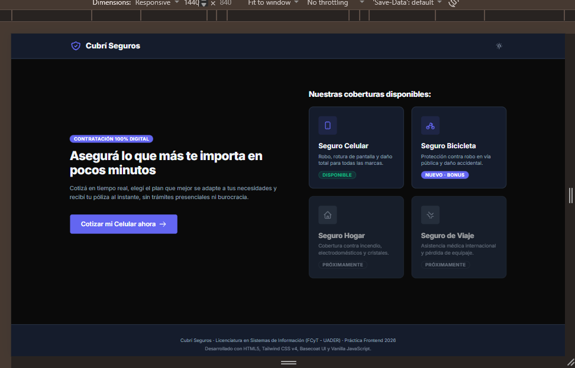
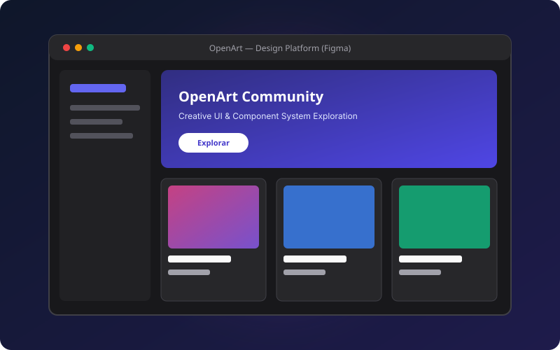

Años de formación en Sistemas de Información
Pablo Sosa
Estudiante de la Licenciatura en Sistemas de Información (FCyT UADER)
En formación para el análisis, diseño e implementación de sistemas de información y soluciones digitales, integrando una sólida base técnica y analítica con metodologías centradas en el usuario.
Proyectos y prácticas académicas desarrolladas
Tecnologías y herramientas de software aplicadas
Compromiso con la calidad, usabilidad y accesibilidad
Competencias
Habilidades y Tecnologías
Competencias desarrolladas a lo largo de la carrera en Sistemas de Información, uniendo ingeniería de software y programación con metodologías de diseño centradas en el usuario.
Desarrollo .NET & Backend
Desarrollo de software de escritorio y lógica de negocio aplicando arquitectura en capas, patrones de diseño y modelado de datos relacionales.
- C#
- .NET Framework / Core
- WinForms (Desktop)
- POO (Programación Orientada a Objetos)
- Patrones de Diseño (MVC, Repository)
- SQL Server & T-SQL
- Modelado de Bases de Datos
Diseño UX/UI & Prototipado
Creación de experiencias digitales enfocadas en la usabilidad, arquitectura de información y sistemas de diseño accesibles.
- Figma (UI & Prototipos)
- Design Systems & Tokens
- Wireframing (Baja y Alta fidelidad)
- Arquitectura de Información
- User Research & Proto-personas
- Pruebas de Usabilidad con Usuarios
- Accesibilidad (WCAG 2.2 AA)
Frontend & Estándares Web
Maquetación semántica, código limpio, responsive mobile-first y optimización para rendimiento y motores de búsqueda.
- HTML5 Semántico
- CSS3 Moderno (Custom Properties)
- CSS Grid & Flexbox
- JavaScript Vanilla
- Diseño Mobile-First
- SEO Técnico & Open Graph
- Rendimiento (Lighthouse 90+)
Herramientas & Entornos
Herramientas de control de versiones, entornos de desarrollo, gestión de bases de datos y auditorías de calidad.
- Git & GitHub
- Visual Studio 2022
- Visual Studio Code
- SQL Server Management Studio
- Chrome DevTools & WAVE
- CI/CD & GitHub Pages
Portfolio
Proyectos Destacados
Casos de estudio y prototipos desarrollados en la materia Diseño UX-UI, aplicando investigación centrada en el usuario, prototipado interactivo y maquetación web accesible.
Caso de Estudio

Cubri Seguros — Cotización & Contratación Digital
Diseño de experiencia de usuario y desarrollo frontend interactivo para la cotización y contratación digital de seguros. Estructurado en un flujo optimizado de 5 pasos que guía al cliente desde el cálculo de cuota hasta la confirmación y pago de su póliza.
Resultado & Aprendizaje: Reducción de fricción cognitiva en la carga de datos personales y validación de fidelidad entre el prototipo de Figma y el sitio web responsivo en mobile (390px) y desktop (1440px).
Coffea — Landing Page & Catálogo
Diseño y maquetación web para una cafetería de especialidad, con catálogo visual interactivo de bebidas y postres, estética visual cuidada y arquitectura de información clara.
Resultado & Aprendizaje: Implementación de maquetación semántica sin librerías pesadas, rendimiento Lighthouse óptimo y despliegue automatizado con Netlify.

OpenArt — Plataforma Creativa & UI Kit
Diseño de interfaz de usuario para una plataforma de creadores y arte digital. Enfoque centrado en la exploración visual, navegación por galerías y jerarquía de contenidos multimedia.
Resultado & Aprendizaje: Construcción de componentes reutilizables con variantes en Figma, aplicación de tokens tipográficos y diseño de flujos consistentes.